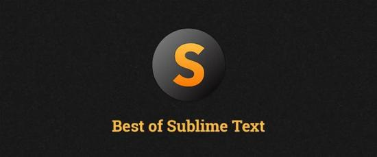

技巧 sublime text3
Sublime Text 3最好的功能、插件和设置
时间：2015-06-18
转发自 《http://www.css88.com/archives/5858》
Sublime Text 3 是一个了不起的软件。首先，它是一个干净，实用，可以快速的编写代码编辑器。它不仅具有令人难以置信的内置功能（多行编辑和VIM模式），而且还支持插件，代码片段和其他许多东西。 我知道，网上已经有许多关于 Sublime Text 3 的文章，这事好事情。在这篇文章中，我们将看到 Sublime Text 3 的最好的部分，您可能已经听说过其中的一些，但也许其他一些人还不知道。
Command Palette （命令面板） ctrl + shift + p
命令面板可以使你访问设置菜单中可以所有的东西，调用包命令，更改文件的语法，处理Sublime项目，等等。举例来说，你可以在命令面板中Git命令添加，分支，提交和推送。

上一篇：没有了
推荐文章